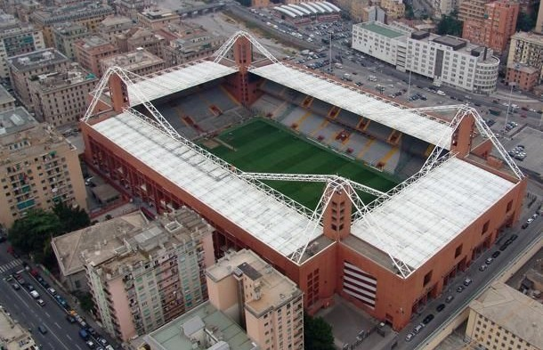

Treinador: Daniele De Rossi
Daniele De Rossi, figura icónica do futebol italiano, é o atual treinador do Genoa. Após uma saída conturbada da Roma, o técnico assumiu o comando do "Grifone" em novembro de 2025 para consolidar a sua carreira no banco de suplentes.
Estádio: Luigi Ferraris
O estádio Luigi Ferraris é o estádio mais antigo e "inglês" de Itália. Inaugurado em 1911 e casa do Genoa e da Sampdoria, destaca-se pela proximidade das bancadas ao relvado e pela atmosfera intensa, sendo o palco histórico do icónico Derby della Lanterna.

Estilo de Jogo:
O estilo de jogo de Daniele De Rossi no Genoa é uma mistura de pragmatismo competitivo com conceitos de futebol associativo, focando-se na coragem e na ocupação inteligente dos espaços.
"Il Club più antico d'Italia!"